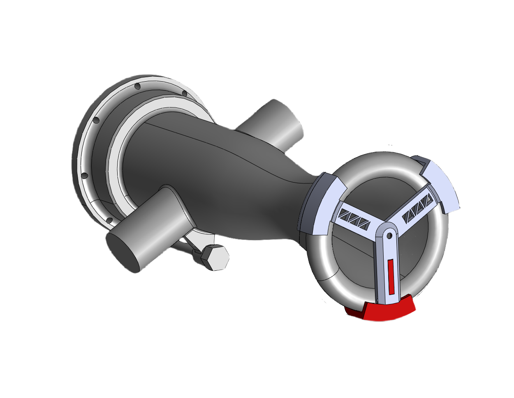
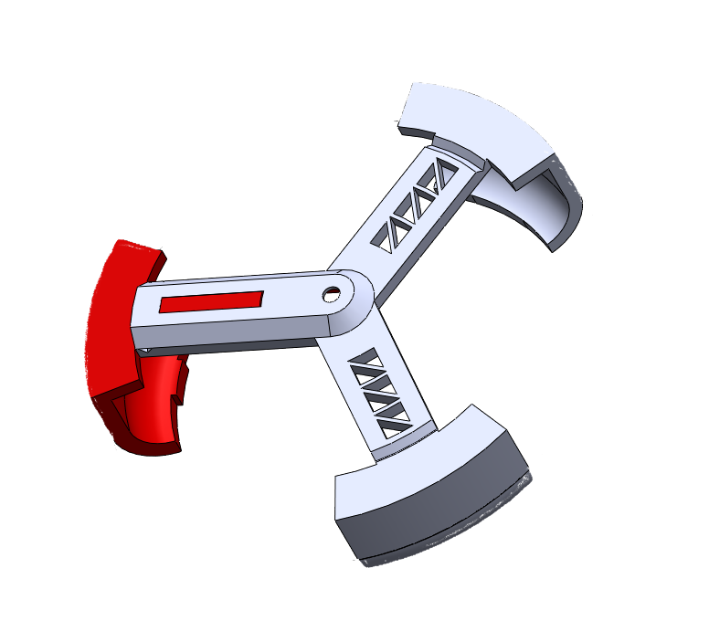
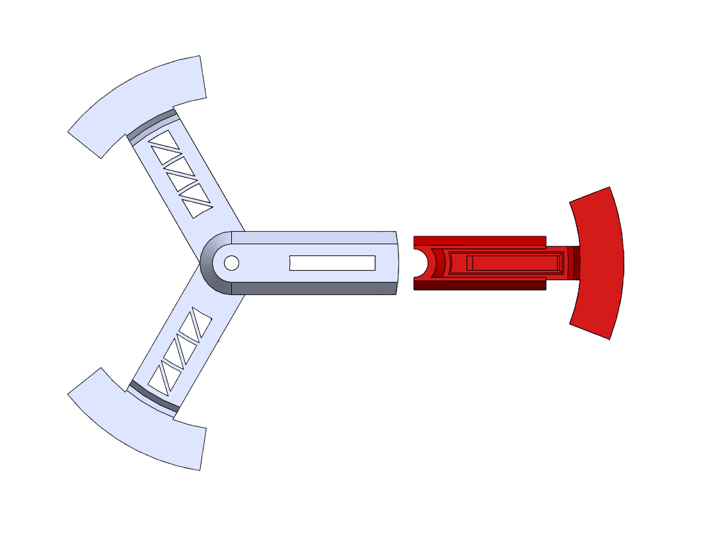

Igniter system development focused on reliable ignition performance, robust mechanical retention, and repeatable testing validation.
As Igniter Lead, I redesigned the clamp retention system, improved firing circuitry, and developed standardized molding and testing procedures.


The updated igniter mount introduces a modular clamp system designed for improved retention, alignment, and manufacturability under dynamic loading.
The design reduces part complexity while improving installation consistency and structural robustness.
Exploded views highlight component relationships and assembly order, ensuring clarity in integration and maintenance procedures.

A dynamic animation was created to visualize bracket motion, alignment behavior, and system integration in operation.
The igniter uses a molded pyrotechnic compound ignited via a resistive bridgewire. When current is applied, the wire rapidly heats and initiates combustion.
Testing verifies ignition reliability, flame strength, and combustion consistency prior to propulsion system integration.